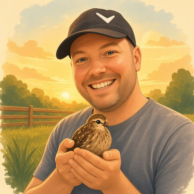

L'auteur : Marc-André

Bonjour. Moi, c'est Marc-André, le papa de Zackary.
Le Rythme des Saisons, c'est ma fermette. J'y élève des cailles, au fil des saisons.
Zackary met la main à la pâte quand le cœur lui en dit. Il tient aussi son propre journal, pour raconter ses journées.
Ici, dans le carnet, j'écris de mon côté : les soins, les projets, et les jours ordinaires de la fermette.
— Marc-André